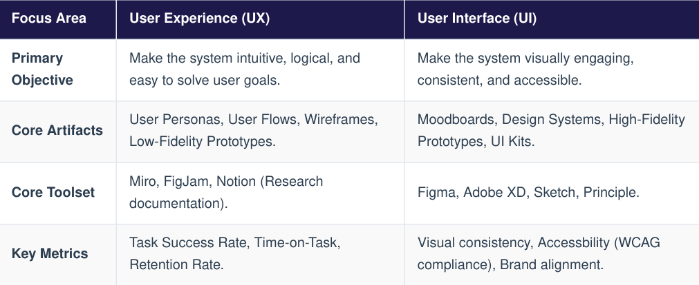

UI/UX Design Course
Though often grouped together as a single discipline, User Interface (UI) and User Experience (UX) design represent two distinct stages of product development. Together, they bridge the gap between human psychology, visual aesthetics, and software development.
UX design focuses on the architecture, structure, and overall systemic flow of a digital product. It determines how a user feels when interacting with the system, optimizing for efficiency, emotional validation, and ease of navigation.
2. User Interface (UI) Design
UI design translates structural wireframes into interactive visual touchpoints. It focuses on typography, responsive layouts, button styling, accessibility constraints, and color harmony to construct an aesthetic system that matches the brand identity.
The Fundamental Symbiosis
An exceptional UI with poor UX creates a beautiful interface that is frustrating to navigate. Conversely, an exceptional UX with poor UI yields a highly functional structure that feels unpolished and fails to establish user trust.
Professional design pipelines rely on structured heuristics to evaluate usability and ensure predictable interaction models.

2. Essential Laws of UX Design
- Jacob's Law : Users spend most of their time on other websites. This means they expect your site or application to operate similarly to the design patterns they already understand.
- Fitt's Law : The time required to acquire a target is a function of the distance to and size of the target. Crucial action buttons (like checkout or save buttons) should be large and placed in accessible regions.
- Hick's Law : The time it takes to make a decision increases with the number and complexity of choices. Complex registration or onboarding tasks should be broken down into multi-step wizards to prevent user cognitive overload.
Enterprise UI/UX operations leverage the Double Diamond design process framework, divided into four distinct operational phases:
1. The Design Phases
- Discover : Researching user pain points, conducting empathy interviews, and gathering competitive market insights
- Define : Synthesizing data into actionable User Personas and localized problem statement hypotheses.
- Develop : Sketching structural ideas, structuring digital Information Architectures (IA), and assembling clickable mid-fidelity prototypes.
- Deliver : Running structured Usability Testing, refining interactive details into a final high-fidelity system design, and building the component-based Design System.
2. Building a Design System
A Design System is a single source of truth that stores reusable visual assets and functional components governed by clear design rules. It scales the product systematically and aligns design artifacts directly with engineering code libraries:
- Design Tokens Core style variables stored as key-value pairs (e.g., brand colors, layout spacing grids, font sizes)
- Atom Components : Indivisible baseline items like primitive buttons, text input blocks, and isolated icon sets
- Molecule Assemblies : Grouped components acting as a coordinated structure, such as a search bar containing a text input field and a submit button.
Or you can download the Pdf files here.